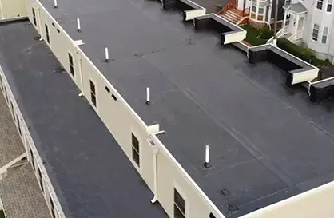

Professional Commercial Roofing Solutions
Verstera Roofing provides comprehensive commercial roofing services designed to minimize business disruption while delivering durable, energy-efficient roofing systems for properties of all sizes.
With years of experience serving businesses throughout Central Texas, our commercial roofing team understands the unique challenges faced by property owners and facility managers. From retail buildings and warehouses to office complexes and industrial facilities, we offer customized solutions that meet your specific needs and budget.
We use only premium-grade materials from trusted manufacturers, ensuring your commercial property receives the highest quality protection against Central Texas's severe weather conditions, including hailstorms, high winds, and intense UV exposure.
Request a Commercial Roof Assessment
Our Commercial Roofing Services
Commercial Roof Installation
New construction and replacement commercial roofing systems installed by experienced professionals with minimal business disruption.
Commercial Roof Repair
Fast, reliable repairs for leaks, storm damage, and structural issues to prevent costly water damage and business interruptions.
Roof Coating & Restoration
Extend your roof's lifespan and improve energy efficiency with commercial roof coatings and restoration services.
Preventative Maintenance
Regular inspection and maintenance programs to identify potential issues before they become expensive emergencies.
Emergency Roof Services
24/7 emergency response for storm damage, major leaks, and other urgent commercial roofing issues throughout Central Texas.
Roof Inspections & Assessments
Comprehensive evaluations to determine the condition of your commercial roof and recommend appropriate solutions.
Protect Your Commercial Property with Expert Roofing Solutions
Don't wait until leaks or storm damage affect your business operations. Contact Verstera Roofing today for a comprehensive assessment of your commercial property's roofing needs. Our team will provide a detailed proposal tailored to your specific requirements and budget considerations.
Request Commercial Roof Assessment